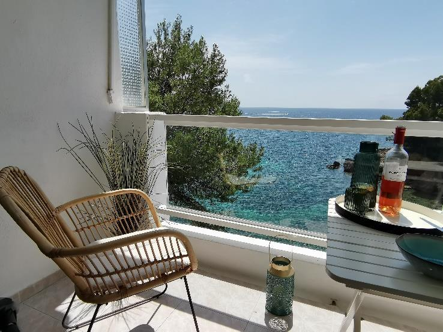
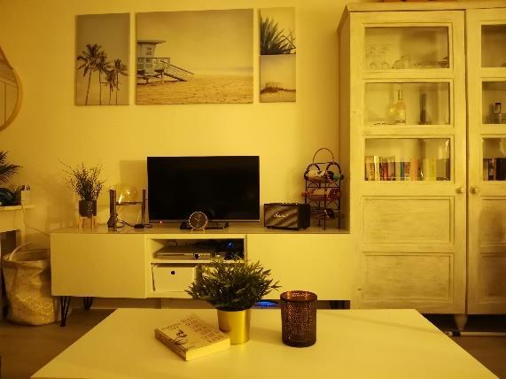
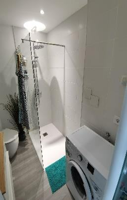
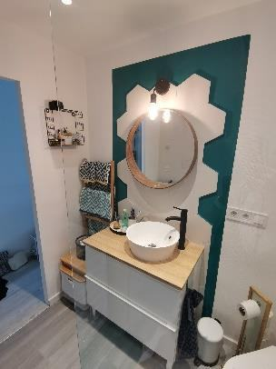
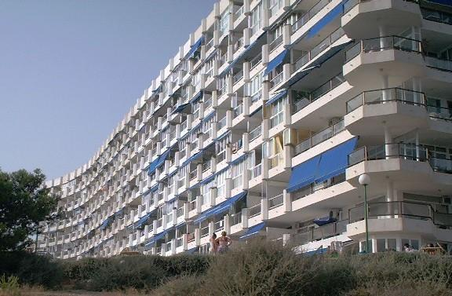
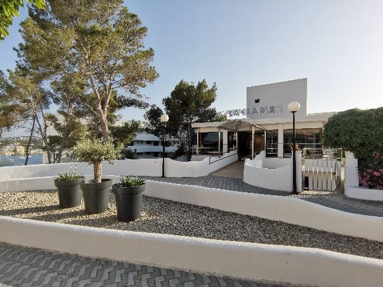
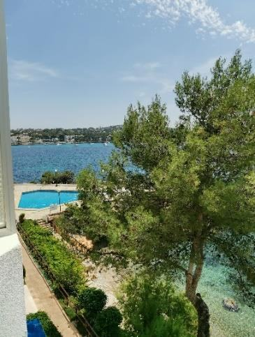
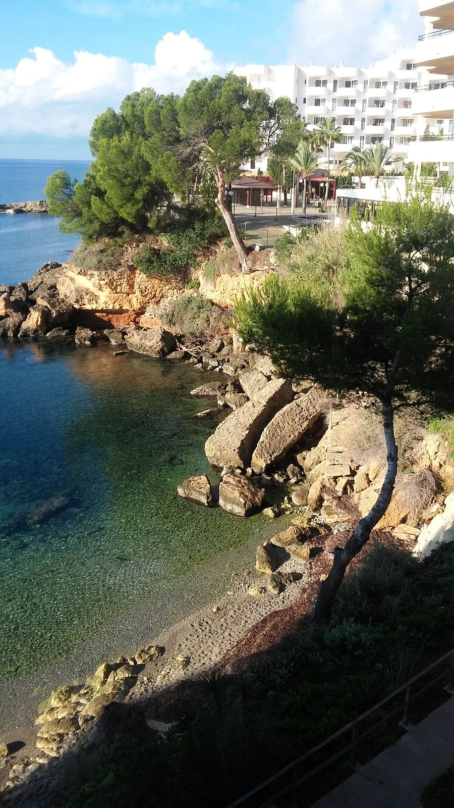
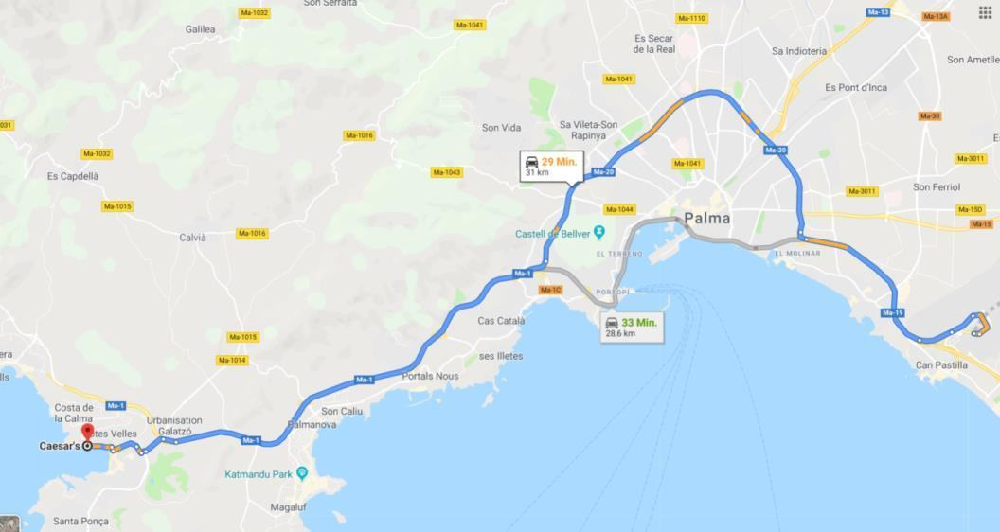
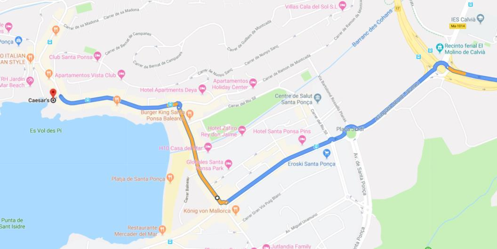

Apartment 422
Im CAESARS in Santa Ponsa auf Mallorca – direkt über einer kleinen Badebucht.
Der Balkon
Das Herzstück
Der große Balkon über der idyllischen kleinen Badebucht ist das Herzstück des Apartments. Er zeigt auf das offene Meer und die Bucht von Santa Ponsa. Die Fensterfront lässt sich zu zwei Dritteln öffnen, so dass man beim Kochen direkt aufs Meer schauen kann.
Er zeigt nach Westen, die Sonne scheint also erst am Nachmittag auf ihn. Vor der Sonne schützt eine große Markise.
Im Frühjahr, Herbst und Winter lassen sich vom Balkon aus tolle Sonnenuntergänge beobachten – und abends hört man beim Einschlafen das Meeresrauschen.

Die Räume
Schlafzimmer
Zwei 80-cm-Betten mit Matratzen, die als Einzel- oder Doppelbett nutzbar sind, ein geräumiger Einbauschrank und ein Nachttisch. Weiterer Stauraum findet sich unter den Betten sowie im Wohnzimmer.

Offene Küche
Sie geht in den Wohnraum über, so dass man beim Kochen aufs Meer schaut, und ist vollständig ausgestattet.
Wohnbereich
Ein Schlafsofa, ein gemütlicher Sessel, ein Couchtisch und ein ausklappbarer Ess- bzw. Arbeitstisch. Was sonst noch alles da ist, steht unter Ausstattung.


Bad
Im hellen, modernen Bad befinden sich Dusche, Toilette und Waschmaschine – hier kann man also auch problemlos länger entspannen.


Die Anlage
Das CAESARS
Das CAESARS liegt an der Nordseite der Bucht von Santa Ponsa. Das Gebäude ist an einen Felsen gebaut, deshalb liegt der Eingang auf der 8. Etage. Drei Aufzüge sorgen für einen einfachen Zugang zu den Apartments. Nur ein Teil der Privatwohnungen wird vermietet, es herrscht also praktisch kein Pauschaltourismus.
Unten befindet sich ein Pool mit Duschen, der nur für Bewohner der Anlage freigegeben ist.


Bucht & Baden
Unterhalb des Pools liegt eine traumhafte kleine Badebucht (Kies), die – wie der gesamte Küstenbereich – öffentlich zugänglich ist, aber in erster Linie von Einheimischen genutzt wird. Auf der anderen Seite des Pools führt eine Leiter ins Wasser der großen Bucht. Man kann herrlich SUPen und schnorcheln.


Anfahrt
Vom Flughafen Palma (PMI)
Taxi: etwa 45 € von und zum Flughafen.
Bus: Es gibt Busse, die direkt oder mit Umsteigen nach Santa Ponsa bis vor das CAESARS fahren. Die Fahrpläne ändern sich jedoch häufig – am besten kurz vorher online nachsehen.
Auto: Rund 25 Minuten über die Autobahn. Der Eingang liegt wegen der Hanglage auf der 8. Etage.
Lage in Google Maps

Kontakt
Bei Fragen und Problemen
Florian
flo.grz@gmail.com
Schlüssel im Notfall in Apartment 222 oder in Apartment 421.